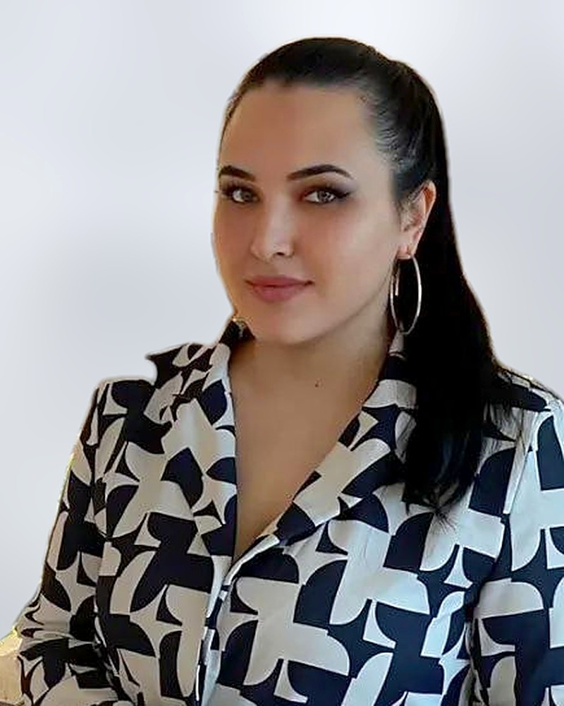

عن KZ
أسست كيري زيلر KZ Development & Consulting في عام 2024 لتقديم تصميم تعلّم مدروس وقائم على الأدلة للمؤسسات والمدارس والجامعات.
ما نؤمن به
لا يستحق التدريب الوقت المبذول فيه إلا إذا تغيّر أسلوب عمل الناس بعده. لهذا نستمع قبل أن نصمم، ونبني الجلسات حول مهام حقيقية، ونخطط للمتابعة قبل ورشة العمل الأولى.
يستند نهجنا إلى التصميم العكسي وأبحاث تعلّم الكبار، وإلى سنوات قضاها فريقنا في جامعات ومدارس دولية ومؤسسات نامية في أمريكا الشمالية وأوروبا وأمريكا اللاتينية وآسيا الوسطى والخليج.
كيف نعمل
محادثة أولى
نتحدث عن أهدافك وفريقك وما جرّبته حتى الآن.
معرفة الاحتياجات
مقابلات أو استبيانات أو جلسات استماع، حسب حجم العمل.
التصميم والتقديم
جلسات مبنية حول مهام حقيقية، تُقدَّم حضوريًا أو عبر الإنترنت أو من خلال مدربيكم.
المتابعة
نتابع مع المديرين والمشاركين لنرى ما الذي تغيّر، ونعدّل وفقًا لذلك.
فريقنا
اختر شخصًا لقراءة ملفه التعريفي كاملًا.

كيري زيلر
المؤسِّسة ومستشارة تصميم التعلّم
تقود KZ وتصمم برامج التعلّم للمؤسسات والمدارس والجامعات.
عرض الملف التعريفي
فيكتور سيمون
الوساطة وتطوير الفرق
يساعد الفرق على التواصل وحل النزاعات وبناء الثقة، في المدارس وأماكن العمل.
عرض الملف التعريفي
هبة دهشة
أخصائية تعليم
تدعم المدارس في تصميم المناهج وتدريب المعلمين والاستعداد لتفتيش دائرة التعليم والمعرفة.
عرض الملف التعريفيمدينة توشيفا
التصميم التعليمي
تصمم وحدات التدريب والتهيئة للبيئات التعليمية والمؤسسية.
عرض الملف التعريفيفيسولا أسرروفا
التسويق الرقمي
تخطط للتسويق الرقمي في KZ، وتنتج المحتوى، وتدير قنوات التواصل الاجتماعي.
عرض الملف التعريفي
نرجيزا جومانوفا
الدعم الإداري
تنسّق الشؤون الإدارية والمواعيد والشؤون المالية ليسير كل مشروع بسلاسة.
عرض الملف التعريفي